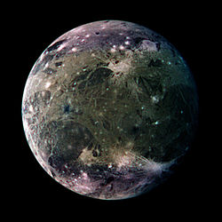

Moon 1: Callisto
View of the heavily cratered terrain of Callisto's anti-Jovian hemisphere.
- Diameter (km)
- 22.2 km
- Mass (kg)
- 2x1015km
- Orbital period
- 30.35 h

Moon 2: Ganymede
This moon is great because it has an epic name.
- Diameter (km)
- 12.6 km
- Mass (kg)
- 1-.8x1015km
- Orbital period
- 7.66 h